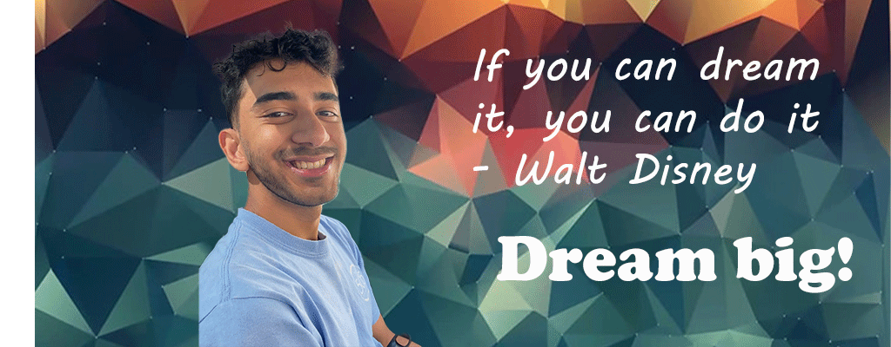

Greetings everyone! My name is Amaan Kazi and I am currently a senior in his last semester studying Information Management and Technology with a concentration in Information Security Management at the iSchool.
My goal once I have graduated is to enter the tech industry using what I have learned here at Syracuse. More specifically, I am interested in the cybersecurity industry because it is the most fascinating to me with a good combination of analytical thinking and technical skills.
A list of my techincal skills are as followed.
- Databases
- Java
- Python
Personal Info
Outside of my career so far, I like playing sports like tennis and soccer in my free time. I also play quite a lot of video games. I have a lot of favorite movies and TV shows but if I had to choose just one it would be How to Train your Dragon and Game of Thrones. I was also on the school e-sports team in my freshman year at SU.